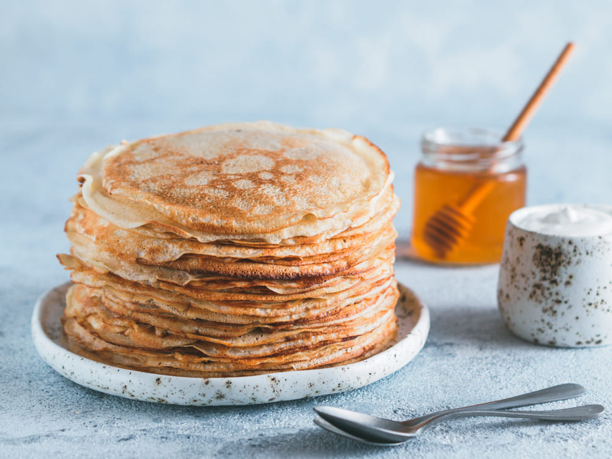

Pancakes
| Ingredient |
Amount |
| Plain flour |
100 g |
| Large eggs |
2 pcs |
| Milk |
300 ml |
| Sunflower oil |
1 tbsp |
| Sugar |
25 g |
- Step 1: Put 100g plain flour, 2 large eggs, 300ml milk and 1 tbsp sunflower oil into a bowl, then whisk to a smooth batter.
- Step 2: Set a frying pan over a medium heat and carefully wipe it with some oiled kitchen paper.
- Step 3: When hot, cook your pancakes for 1 min on each side until golden.
- Step 4: Serve with your favourite filling.